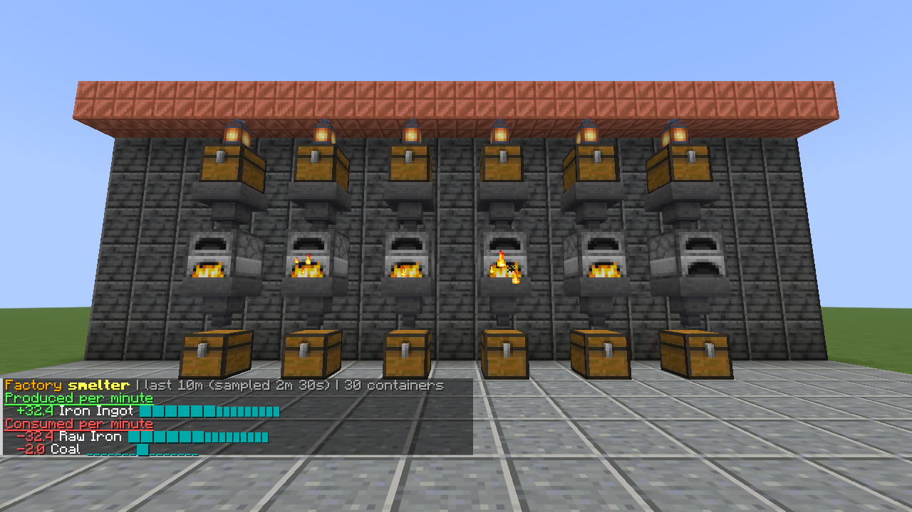
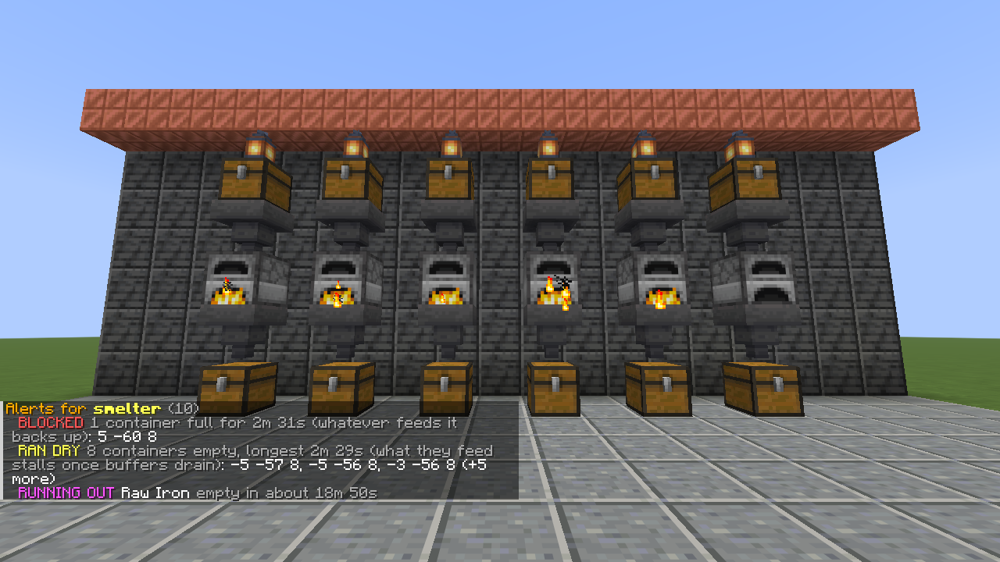
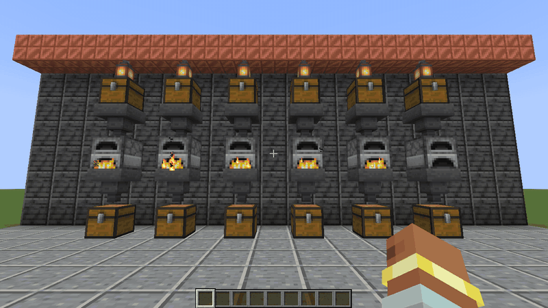
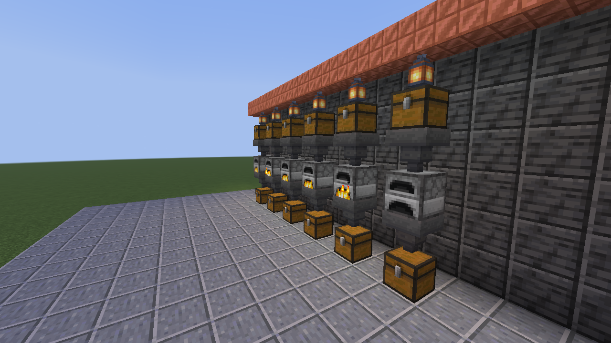
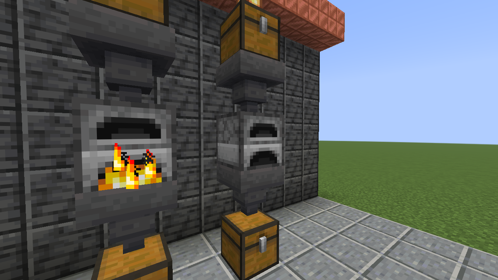

Per-item rates over four windows
Produced and consumed per minute, averaged over the last 1m, 10m, 1h or 10h, with a sparkline of the window next to every item.
Factorio-style production stats for any Minecraft factory.
Group chests, furnaces and modded storage into a factory, then read per-item rates, history and alerts right in chat.
Factory smelter | last 10m (sampled 2m 30s) | 30 containers
Produced per minute
+32.4 Iron Ingot ██████▇▇▇▇▇▇▇▇▇
Consumed per minute
-32.4 Raw Iron ██████▇▇▇▇▇▇▇▇▇
-2.0 Coal ▁▁▁▁▁▁▁█▁▁▁▁▁▁▁
Alerts for smelter (10)
BLOCKED 1 container full for 2m 31s
RUNNING OUT Raw Iron empty in about 18m 50s

/flow stats smelter 10m Top items with per-minute rates and history.
/flow alerts smelter Blocked, dry, missing or about to run out.
/flow watch smelter A live ticker on your action bar while you build.Produced and consumed per minute, averaged over the last 1m, 10m, 1h or 10h, with a sparkline of the window next to every item.
Install it on the server. Players join with an unmodified client and still get every report in chat.
Chests, barrels, furnaces, hoppers, and modded storage that exposes Fabric item storage, which most tech mods do.
/flow watch puts the top output, top input and alert count on your action bar, updated as the factory runs. /flow unwatch clears it.
Anyone can read stats. Creating and editing factories needs operator permission, and alert coordinates are only shown to people allowed to see them.
Six furnace lines of chest, hopper, furnace, hopper, chest: 30 containers tracked as one factory called smelter. The chat output and captures on this page come from it.


Every second of game time, Throughput reads each tracked container and adds up the per-item change. The sum is the factory's real net production.
A hopper taking ore from one tracked chest into a tracked furnace is a minus in one place and a plus in the other. The factory total does not change.
A container that unloads or breaks contributes nothing. A chunk unloading never looks like the factory ate everything; it shows up as MISSING instead.
Adding a double chest tracks both halves, and each half is read on its own, so items are never counted twice.
History follows game time and is stored with the world, so it survives restarts and pauses.
/throughput and the short alias /flow do the same thing. A first factory takes three commands:
> /flow factory create smelter
> /flow addarea smelter ~-4 ~-1 ~-4 ~4 ~2 ~4
> /flow stats smelter 10mReading is open to everyone. Changing factories needs operator permission by default, or the matching node with a permissions mod.
| Command | What it does |
|---|---|
| Set up a factory | |
factory create <name> | New factory in your current dimension. |
factory delete <name> | Delete a factory and its history. |
factory list | List every factory on the server. |
add <factory> [pos] | Track the container you look at, or the one at pos. Double chests add both halves. |
addarea <factory> <from> <to> | Track every container inside a box. |
remove <factory> [pos] | Stop tracking a container. |
| Read it | |
stats <factory> [1m|10m|1h|10h] | Top produced and consumed items with rates and sparklines. |
alerts <factory> [all] | Blocked outputs, dry inputs, missing containers and time to empty, grouped per kind. all lists every container. |
watch <factory> | Live ticker on your action bar. |
unwatch | Stop the ticker. |
| Administer | |
reload | Reload config/throughput.json without a restart. |
With a permissions mod, these nodes decide. Without one, the default operator levels apply.
throughput.usethroughput.managethroughput.coordinatesthroughput.adminconfig/throughput.json, applied with /flow reload.
{
"sampleIntervalSeconds": 1,
"alertAfterSeconds": 10,
"runningOutHorizonMinutes": 60,
"maxContainersPerFactory": 4096,
"maxAreaBlocks": 32768,
"permissionLevels": {
"use": 0, "manage": 2,
"coordinates": 2, "admin": 3
}
}1.75 ms
median time to sample a factory of 4,096 chests, measured with tools/benchmark.sh.
If saved data is from a newer version, unparseable, or cut short by a crash, Throughput backs it up, never overwrites it, and goes read-only until you sort it out.
Needs Minecraft 26.3, Fabric Loader 0.19.5 or newer, Fabric API and Java 25.
mods/ folder..minecraft/mods/.No. Throughput runs on the server only and sends plain chat and action-bar text, so vanilla 26.3 clients can join and use every command they have permission for.
It only reads the containers you add to a factory, once per second of game time. Server owners can cap the size of addarea boxes and the number of containers per factory in the config.
Yes, for any block that exposes Fabric item storage (the Transfer API). Most tech mods do, so drawers, crates and machine inventories usually just work.
Not yet. Throughput tracks items only for now.
No. Items are grouped by item id, so an enchanted pickaxe and a plain one count as the same item.
Only if you let them. Alerts show container coordinates to operators (or anyone with throughput.coordinates) and leave them out for everyone else.